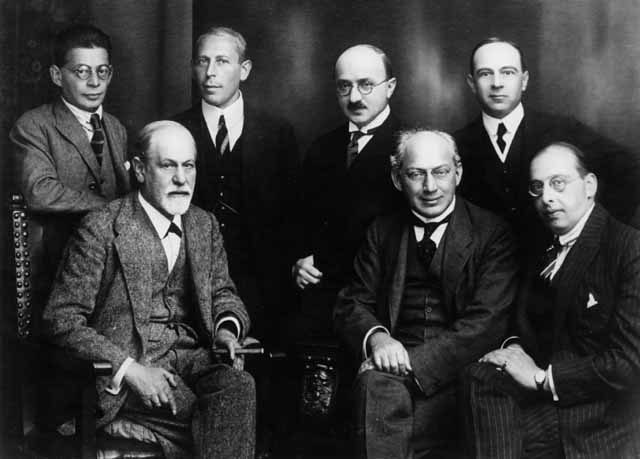
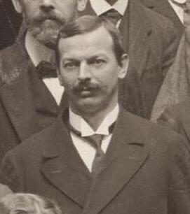

这一页在做什么
弗洛伊德篇的最后一页。前几页讲他怎样提防传记、怎样设想「按自己的方式死」；这一页转到他真实的死：1939 年 9 月，伦敦，口腔癌晚期，私人医生 Schur 按两人早先的约定给他注射了吗啡。Phillips 把两部权威传记（Jones、Gay）写的临终场面并排读，看传记作者希望弗洛伊德怎样死；最后一节借 Trilling 的一篇演讲，重新解释死亡驱力。读的时候抓两条线：传记作者往这场死里放进了什么，弗洛伊德的理论又为什么说这做不到。
伦敦 Maresfield Gardens 20 号，从后花园看过去，今天是弗洛伊德博物馆。弗洛伊德 1938 年流亡到这里，第二年 9 月死在这栋房子里；Gay 写他最后的日子待在楼下的书房，望着花园。摄于 2023 年。Bryn Holmes，CC BY-SA 2.0，维基共享资源
读之前：这一页在全书的哪里
上一页讲弗洛伊德的反传记：给茨威格的回信说传记的真相得不到，歌德奖演说说传记满足一种需要、又把伟人拉低，达·芬奇一书说偶然和童年让人无从下手。第 46 段的「如我所说」、第 47 段的「如我们所见」，接回的就是这些。第 20 段提过两个问题：死亡驱力是用来解决什么问题的，弗洛伊德为什么那样反感传记。这一页让两个问题在他自己的死上碰头。
一个一辈子说「人不能被看透」的人，死后被传记写成了什么样？
读的时候带着这几个问题。不用先找答案，读完回来对照「检查一下理解」。
Jones 和 Gay 写的是同一场死，各自把它收在哪个词上？§7
Phillips 为什么特意把 Gay 只引了一半的那段信整段摆出来？§7
Phillips 说传记作者的另一个名字是「自我」。这个等号你信几分？§7
Trilling 说死亡的念头能「救」人。救人免于什么？§8
这一页的路线
§7 很长，走的是「先立规矩，再拿两份文本来对」：第 46–47 段重提弗洛伊德对传记的不满，抛出一个问题：他自己是按自己的方式死的吗？接着是两轮同样的动作：先看传记作者的序言或评语，再整段引他们写的临终场面，然后逐词挑刺（Jones 在第 48–54 段，Gay 在第 55–61 段）。第 59–61 段是转折：Phillips 把 Gay 只引了一半的那段信补全。第 62 段起离开文本，从这两部传记推到传记本身，再推到「自我」，第 66 段用一句倒转的话收住。§8 短，像尾声：从王尔德的一句玩笑跳到 Trilling 的演讲，再往「死亡」这个词本身走。读到第 71 段会觉得突然变成了抒情，那是在给整篇收尾。
§7 第 46–66 段
§8
引文
Phillips
一个问题 他怎样死
Jones 的临终 第 49–52 段
现实主义者 也是哈姆雷特
Gay 的临终 第 56–58 段
老斯多葛 掌控到底
给 Pfister 的信 整段
传记作者＝自我 第 62–66 段
Trilling 福斯特的话
死亡驱力 一份独立
本站示意图。蓝点是 Phillips 引的文本（传记、书信、演讲），橙点是他读出来的意思；折线是阅读顺序，虚线是原书的空行。 作者落在哪： 两位传记作者都把弗洛伊德的死写成和一生首尾一致的结局，而他的理论说这做不到；Gay 没引的那半段信里，那人更像一个只想写下去的人。Phillips 提出，传记作者的弗洛伊德式名字是「自我」，死亡驱力则是我们逃开一切讲述的那部分。
分节地图
这一页是原书弗洛伊德篇的第 7–8 节。原书没有小标题，只在节与节之间空一行；粗体的节名是本站起的，斜体是这一节第一段开头的几个词，在电子书里搜它就能跳过去。读完打个勾。
琼斯和盖伊写的临终约 3200 词 It is perhaps worth wondering, given … 全页的主体。第 48 段起读 Jones，第 55 段起读 Gay，第 59 段起补全一封信，第 62 段起从传记推到「自我」。 死亡驱力是一份独立约 700 词 Freud’s notion of the death instinct, … 借 Trilling 的演讲重读死亡驱力；最后两段转向「死亡」这个词，给整篇收尾。
先用中文过一遍：这一页的概念
先把这一页用到、作者默认你懂的几个概念讲一遍。讲的是概念本身，作者拿它做什么，读原书时自己看。
§7 自我 ego（das Ich） 弗洛伊德 1923 年在《自我与本我》里把心灵分成三块：本我（冲动）、超我（内化了的规矩和良心）、自我。自我夹在中间，一边应付本我的冲动和超我的要求，一边应付外部现实，而且它自己也有一大块是无意识的。德文 Ich 就是平常说的「我」，英译本换成拉丁词 ego，读起来才像术语。弗洛伊德有句名言：自我不是自己家里的主人。打个比方：自我像一个项目的对外发言人，底下各模块在干什么它并不全知道，却总得给出一份前后一致的说明。今天的学院心理学不再用这套三分结构，但「人对自己行为原因的解释常常是事后编的」，有不少实验支持。
在这一页： 第 59 段说弗洛伊德的理论讲的是自我的脆弱；第 65 段的结尾把传记作者叫作「自我」。
§7 斯多葛 Stoicism 古希腊的一个哲学学派，约公元前 300 年由芝诺（Zeno of Citium）在雅典创立，因讲学的柱廊（stoa）得名；罗马时代的代表是塞涅卡、爱比克泰德、马可·奥勒留。核心是分清什么在自己掌控之内（判断、选择），什么不在（身体、名声、生死）：只对前者用力，对后者平静接受；美德是唯一的善，激情来自错误的判断。他们主张不怕死，塞涅卡等人还认为，处境不堪时人可以自己决定离开。程序员的类比：只处理自己能控制的变量，其余当作环境输入照单全收。日常英语的 stoic 多半只剩「隐忍、不动声色」的意思。今天的认知行为疗法常把斯多葛派算作思想源头之一。
在这一页： Gay 用「老斯多葛」给临终收尾（第 58–59 段）；Phillips 说 Jones 写的也是「高贵的斯多葛」（第 54 段），又说信里那人不是（第 61 段）。
这一页还用到几个别页讲过的概念：死亡驱力 、快乐原则与现实原则 （第 53 段）、哀悼 （第 70 段）、矛盾情感 。
书里的人和作品
按在书里出现的顺序排，标题前是节号。作品只讲到读懂这一页需要的程度。
§7 Jones 的三卷本《弗洛伊德的生平与工作》
1922 年，弗洛伊德（前排左一）和几位精神分析家合影，后排最右是 Ernest Jones。三十年后，Jones 写的是自己追随了几十年的人。Becker & Maass，公有领域，维基共享资源 全名 The Life and Work of Sigmund Freud ，1953–1957 年出了三卷，最后一卷写到 1938 年流亡伦敦和第二年的死。Jones 得到弗洛伊德家人的同意和资料，所以它是「官方传记」。出版时备受推崇，后来常被批评把弗洛伊德写得过于光彩，对兰克（Otto Rank）、费伦齐（Sándor Ferenczi）这些后来疏远的同道有偏见。Phillips 先读它的序言（第 48 段：为什么要写），再整段引它的临终一节（第 49–52 段）。
Ernest Jones 1879–1958 威尔士出身的神经科医生、精神分析家，把精神分析带进英国；1938 年奔走安排弗洛伊德一家逃出维也纳。在这一页：第一位传记作者。
§7 Gay 的《弗洛伊德：我们时代的一生》（1988）Freud: A Life for Our Time ，一卷本，比 Jones 晚三十年。一般认为它比 Jones 平衡，也更愿意批评传主；不信精神分析的评论者则嫌它不够客观。第 46 段说它开头讲的就是弗洛伊德烧笔记的事。Phillips 读的是它的临终一节（第 56–58 段），特别留意两处：它说 Jones 对那个手势读得对，却不提哈姆雷特；它引弗洛伊德给 Pfister 的信，只引了一半。
Peter Gay 1923–2015 生于柏林的历史学家，1939 年离开德国，后来在美国教书，长年任教于耶鲁，研究启蒙运动和 19 世纪的中产阶级文化。在这一页：第二位传记作者。
§7 1939 年 9 月：Schur 和那个约定弗洛伊德从 1923 年起患口腔癌，前后动过三十多次手术。1938 年纳粹吞并奥地利，他流亡伦敦，第二年 9 月 23 日死在 Maresfield Gardens 的家里。他的私人医生 Max Schur 从 1928 年起照料他，两人早有约定：到了只剩折磨的时候，不让他白受罪。两部传记都写了 Schur 按约定给他注射吗啡，可用量和时间对不上（见下图），Phillips 没有点出这些出入。Schur 自己的回忆录《弗洛伊德：生与死》1972 年才出版，那时他已去世。
9 月 19 日
Jones 告别的手势＝此外唯有沉默Gay 同一个手势，不提哈姆雷特9 月 21 日
Jones 「你答应过」「告诉 Anna」Gay 「约定」「和 Anna 商量」吗啡
Jones 22 日上午，三分之一格令Gay 21 日起，3 厘克，共三针去世
Jones 23 日，午夜前Gay 23 日，凌晨三点收尾的词
Jones 现实主义者Gay 老斯多葛Jones：1957 年第三卷
Gay：1988 年
底色：两家说法不同
本站示意图，按 Phillips 引的两段整理。1 格令约 65 毫克，三分之一格令约 22 毫克；3 厘克是 30 毫克，Gay 说常用的镇静量是 2 厘克。两家的用量和时间对不上，本站不裁决。
Max Schur 1897–1969 维也纳的内科医生，后来也成了精神分析家，1928 年起是弗洛伊德的私人医生，战后在纽约。在这一页：两份临终记述里给吗啡的人。
Anna Freud 1895–1982 弗洛伊德最小的女儿，儿童精神分析的开创者之一，晚年一直照顾父亲。Gay 称她是弗洛伊德的安提戈涅（第 57 段）。
§7 巴尔扎克的《驴皮记》（1831）1838 年版《驴皮记》的插图：古董商举着灯，指给年轻人拉法埃尔看墙上那张驴皮。Janet-Lange 画，Paris Musées，CC0，维基共享资源 La Peau de chagrin ，常译《驴皮记》。走投无路的年轻人拉法埃尔在古董店得到一张神奇的驴皮：每实现一个愿望，皮就缩小一圈，主人的寿命也跟着缩短，皮缩完人就死。书名是双关：chagrin 既是一种粗面皮革，也是「悲伤」。两部传记都说这是弗洛伊德读的最后一本书，他说这本书正合他读，讲的是缩小和饥饿。Phillips 说其中的讽刺 Jones 没看出来，但没有说破是什么；他只补了一句：弗洛伊德最后的愿望，可以说让他「缩到了尽头」（第 54 段）。
巴尔扎克 Honoré de Balzac，1799–1850 法国小说家，把九十来部小说编成《人间喜剧》。
§7 两句临终的台词：哈姆雷特和麦克白「此外唯有沉默」（The rest is silence）是哈姆雷特（Hamlet）临死前的最后一句话，《哈姆雷特》第 5 幕第 2 场。死前他托付好友霍拉旭（Horatio）活下去，把他的事讲给世人听。Jones 说弗洛伊德的手势「再明白不过」就是这句话，Phillips 就说：那弗洛伊德成了哈姆雷特，Jones 成了霍拉旭。可以这样读：霍拉旭正是哈姆雷特指定的「传记作者」。给 Pfister 的信里，弗洛伊德借的是《麦克白》第 5 幕：众叛亲离的麦克白说，至少要披着甲胄死。麦克白是弑君篡位的人，所以 Phillips 说信里那人是「篡位的凶手」，不是斯多葛。
§7 给 Pfister 的信（1910）
Oskar Pfister，1911 年魏玛精神分析大会合影的局部。Franz Vältl，公有领域，维基共享资源 1910 年（Gay 说「将近四十年前」），弗洛伊德在给瑞士牧师 Oskar Pfister 的信里说：没有工作的日子他没法想象，工作和想象的自由驰骋对他是一回事；他唯一的秘密祈求，是别让身体的衰败毁掉工作的能力。Gay 只引了后半，落在「老斯多葛」上；Phillips 在第 60 段把整段补全，前半说的是快乐。两人的通信从 1909 年断续写到 1930 年代，后来出版成书。
Oskar Pfister 1873–1956 苏黎世的新教牧师，最早把精神分析用到牧养和教育上的人之一，和不信教的弗洛伊德做了一辈子朋友。
§8 Trilling 的演讲，福斯特的一句话第 67 段先借王尔德（Oscar Wilde）的一句玩笑：人跟你谈天气，总是在说别的事（喜剧《不可儿戏》，1895）。接着引美国批评家 Lionel Trilling 1955 年在纽约精神分析学会的纪念演讲《弗洛伊德与我们文化的危机》，同年出版成小书。Trilling 的意思是：弗洛伊德需要相信人身上有一处是文化够不着的，死亡驱力也许就是这个需要的表达。他借的是福斯特小说《霍华德庄园》（1910）里的一句：死亡毁掉一个人，死亡的念头却救了他。
Lionel Trilling 1905–1975 美国文学批评家，哥伦比亚大学教授，著有《自由主义的想象》。1961 年他和 Steven Marcus 把 Jones 的三卷传记删编成一卷本。
福斯特 E. M. Forster，1879–1970 英国小说家，著有《看得见风景的房间》《霍华德庄园》《印度之行》。
词与短语
你用 Kindle，单个生词长按就能查，这里只收词典帮不上的：Phillips 的悖论和警句，每个词都认识、合起来拐了弯的说法，英式口语和学术腔，典故和双关。斜体小字是原句里连续的几个词，错字照电子书原样，搜它就能跳到那里。
§7 琼斯和盖伊写的临终
promoting the father by betraying him
… promoting the father by betraying him …
靠背叛父亲来抬举父亲
the father 指精神分析之父弗洛伊德。精神分析家给他写传，是在宣扬他，也违背了他不愿被写的意愿。前面有 as it were，是打个比方。
monumental
… paragraph of Jones’s monumental Life of …
卷帙浩繁的；纪念碑式的
一般指规模巨大。放在这一篇里还有一层：第 9 段说过，传记在弗洛伊德看来是一座纪念碑，纪念「人生可以被看透」这个信念。
biographers were to Freud what creationists were to Darwin
… biographers were to Freud what creationists were …
传记作者之于弗洛伊德，就像神创论者之于达尔文
A is to B what C is to D 是比例式的类比。神创论者认为物种由上帝一次造好，是达尔文天生的对手。
Only for the biographer is death an event in life
… Only for the biographer is death an …
只有对传记作者来说，死才是一生中的一件事
Only 开头，主谓倒装。很像在反用维特根斯坦《逻辑哲学论》（1921）的名句「死不是生命中的事件，人活不到经历死亡」，Phillips 没有点名。死者经历不到自己的死，只有替他写一生的人能把死当成一个情节。
casting aspersions
… and casting aspersions born of psychoanalytic …
说……的坏话、诋毁
cast aspersions on 是固定说法。这里说弗洛伊德凭精神分析的经验，贬低传记这种体裁。
made and marred
… a life was made and marred by …
成也由它，毁也由它
套老说法 make or mar（成全或毁掉）。人的一生由断裂造就，也被断裂毁掉，所以没法写成定稿。
for want of a better word
… for want of a better word …
找不到更合适的词，姑且这么说
for want of = 因为缺少。第 59 段又用了一次。Phillips 用它提醒：relationship、hedonist 这些词只是凑合。
mendacious legend
… gradually accumulating into a mendacious legend …
谎话堆成的传说
mendacious 是「说谎的」。这是 Jones 序言的说法：弗洛伊德的家人见不实的传闻越积越多，才同意出官方传记。
Let’s call the catastrophe, blandly
… Let’s call the catastrophe, blandly, anyone’s …
姑且平平淡淡地给这场「灾难」起个名字
反话。Jones 防的「灾难」，平淡地说出来，不过是人人都能随便怎么想弗洛伊德。blandly 是故意轻描淡写，言下之意：这算不上灾难。
damage-limitation
… It is an exercise in damage-limitation …
止损、控制损害
危机公关和军事里的说法。Phillips 说官方传记的用处是防止别人写错，像一次止损。
a man of his word
… to be a man of his word, …
说话算话的人
平常的意思是守信用。这里 his word 也是他写下的理论：Jones 让弗洛伊德的死「兑现」了他的推测，前后一致，紧接着 Phillips 就换成 narratively coherent（叙事上连贯）。
rather moving
… This is Jones’s rather moving account …
相当感人
英式口语里 rather 是「相当」。Phillips 承认这段写得感人，接下去才拆它。
La Peau de chagrin
… Balzac’s La Peau de chagrin, on which …
（书名）《驴皮记》
法文，巴尔扎克 1831 年的小说。chagrin 既是一种皮革，也是「悲伤」。
a third of a grain of morphia
… Schur gave Freud a third of a grain …
三分之一格令的吗啡
grain 是旧的药剂单位，1 格令约 65 毫克，三分之一格令约 22 毫克。morphia 是吗啡的旧称。这是 Jones 的说法。
a pure culture of the reality principle
… a pure culture of the reality principle …
现实原则的纯培养物
pure culture 是细菌学的「纯培养」，培养皿里只长一种菌。弗洛伊德在《自我与本我》里说过忧郁者的超我像「死亡驱力的纯培养」，Phillips 可能是套用。意思是：Jones 笔下的弗洛伊德身上只剩现实原则。
stiff upper lip
… heroism and British stiff upper lip.
英国人那种咬紧牙关、不动声色
字面「僵硬的上唇」：上唇发抖就要哭了。Phillips 说 Jones 的写法是古典英雄加英国式隐忍，可以读出一点揶揄：一个维也纳人被写成了英国绅士。
an hysterical woman
… is not, as it were, an hysterical …
（不是）一个歇斯底里的女人
as it were 说明这是 Phillips 替 Jones 说出来的潜台词：体面的死要有男子气概。可以这样读：挖苦之处在于，精神分析正是从治疗歇斯底里的女病人起步的。
flying in the face of
… flying in the face of all the …
公然违背
字面「迎面撞上去」。这是 Phillips 对 Jones 的指责：说弗洛伊德是一个始终如一的统一主体，和精神分析的全部证据相反。
to all intents and purposes
… has to all intents and purposes extinguished …
实际上、几乎完全
固定说法，不是「为了一切意图和目的」。
a man without an unconscious
… principle; a man without an unconscious.
一个没有无意识的人
反话。把发现无意识的人写成没有无意识，这是 Jones 的赞美在 Phillips 眼里的荒唐之处。
and Jones Horatio
… also Hamlet, and Jones Horatio.
Jones 就成了霍拉旭
省掉了动词 was。霍拉旭是哈姆雷特临死托付「把我的事讲给世人」的朋友。Phillips 接着说，这样一来 Jones 把弗洛伊德从父亲降成了儿子：哈姆雷特是为父报仇的儿子。
terminally diminishing
… is, as it were, terminally diminishing.
可以说是缩到了尽头
terminal 是「最后的」，也是「晚期的、致命的」（terminal illness）；diminishing 呼应驴皮越缩越小。as it were 表示是打比方。
rather too literally
… he rather too literally dies in his …
未免太照字面了
「按自己的方式死」是弗洛伊德对有机体的推测（第 13 段）。Jones 笔下他真的安排了自己的死，理论被照字面兑现，整齐得过了头。
provides a loophole
… in psychoanalytic writing, provides a loophole.
留了一个漏洞（一条出路）
loophole 原指城墙上的射孔，常用来说法律的漏洞。哈姆雷特是个分裂的人物，他一出场，Jones 那个统一的弗洛伊德就露了缝。
unHamlet his hero
… Gay clearly wants to unHamlet his hero.
把他的英雄身上的哈姆雷特去掉
Phillips 临时造的动词：un- 加人名，像 undo 一样表示撤销。
resigned from life
… He had resigned from life.
认了命，告别人生
resign 两义：听天由命，或辞职。Gay 用的是前一义；Phillips 在第 59 段故意读成后一义：他不是被解雇（sacked），也不是退休（retired），是自己递了辞呈。
leave me in the lurch
… not to leave me in the lurch …
在要紧关头丢下我不管
in the lurch 是陷在困境里，leave someone in the lurch 是撇下不管。这是 Gay 转述的弗洛伊德的话。
Freud’s Antigone
… juncture, Freud’s Antigone was first in …
弗洛伊德的安提戈涅（指 Anna）
希腊悲剧里，安提戈涅是俄狄浦斯的女儿，陪失明的父亲流亡。弗洛伊德自己也这样称呼小女儿 Anna。见
俄狄浦斯情结 。
die in freedom
… come to England to die in freedom.
在自由里死去
弗洛伊德 1938 年流亡时说的话，序章第 11 段已经引过。
three centigrams of morphine
… injected Freud with three centigrams of morphine
3 厘克（30 毫克）吗啡
这是 Gay 的说法，括号里说常用的镇静量是 2 厘克。和 Jones 的「三分之一格令」对不上，Phillips 没有点出。
die in harness
… Let us die in harness, as …
干活干到死
harness 古义是盔甲，麦克白说的是披甲战死；后来指马的挽具，die in harness 就成了「至死不退休」。
untimely self-division
… the individual, his always untimely self-division …
总来得不是时候的自我分裂
untimely 常和 death 连用（早逝、死得不是时候）。这里说人总在不该分裂的时候分裂。
the formative human delusion
… be, in fact, the formative human delusion …
塑造了人的那个根本错觉
formative 是「塑造性的」。后面紧跟着点出是哪个错觉：人能掌控自己的一生。Phillips 说弗洛伊德的理论表明这是错觉，Gay 却说他做到了。
the hedonist in Freud
… the hedonist in Freud with the stoic.
弗洛伊德身上那个享乐的人
hedonist 在这里不是纵欲，是把快乐（写作、想象）当作活着的中心的人，和 stoic 相对。
the free play of the imagination
… work and the free play of the …
想象的自由驰骋
「想象力的自由游戏」本是康德、席勒美学里的说法。这里就是随心所欲地想。
usurping murderer
… German Romantic writer and usurping murderer, …
篡位的凶手
指麦克白。Phillips 说信里的弗洛伊德是两种人合在一起：德国浪漫派作家（工作就是想象），和宁死也要干下去的麦克白。
nor was meant to be
… Macbeth is not Hamlet, nor was meant …
也不该是
套的是艾略特《普鲁弗洛克的情歌》（1915）里的名句「不，我不是哈姆雷特王子，也不该是」。
another triumph for medicine
… death was another triumph for medicine.
又是医学的一次胜利
反话。医学治不好他的癌，却「成功」让他死在自己选的人手里。
goes gently into it
… he goes gently into it, helped …
平静地走进去
可能在反用狄兰·托马斯的名诗《不要温和地走进那个良夜》（1951）。传记里的弗洛伊德偏偏温和地走进去了。
He had unified himself
… beliefs. He had unified himself.
他把自己统一起来了
前一句是 his biographers intimate：这是传记作者的暗示，Phillips 是在转述，不是在赞同。
complicit with everything that undoes them
… begin to look complicit with everything that …
和一切拆散它们的东西是同谋
complicit 是「串通的」。一致、连贯、正直这些品质，在弗洛伊德的描述里，看起来和瓦解它们的力量是一伙的。本站的理解：美德往往正是由它要压住的冲动塑造出来的。
But why not?
But why not? It is, after
可为什么不能写呢？
Phillips 反问自己，话锋一转：照弗洛伊德的标准写不了一生，可精神分析和我们每天都在这样做。接下来他替传记说了一句公道话。
wrathful scepticism
… own creation, in wrathful scepticism.
怒气冲冲的怀疑
前面是 It is as though：Phillips 说弗洛伊德仿佛转过身来，对自己创造的东西发怒。
nomadic and provisional
… psychoanalysis were nomadic and provisional, spoken …
游移不定、只是暂时的
nomadic 本是「游牧的」：分析里得到的真相不落地生根，不刻在纸上，说过就会被改写。
parodic monument
… be like a parodic monument of …
一座戏仿式的纪念碑
parodic 是「戏仿的」。传记像在给我们和死者的关系立碑，立得一本正经，反而像在模仿和嘲弄这种关系。前面有 might be like，是比喻。
losing the plot
… authors who keep losing the plot, …
情节乱了套；犯糊涂
英式口语 lose the plot 是「乱了方寸、搞不清状况」；字面又是「把情节弄丢了」，正好接着「作者」这个比喻。
being fed their lines
… being fed their lines from some …
有人在一旁递台词
戏剧说法 feed someone lines。我们觉得自己是作者，台词却像是从某个说不清的地方递过来的，那地方就是无意识。
§8 死亡驱力是一份独立
most aberrant but significant fiction
… Freud’s most aberrant but significant fiction.
最离谱、却最要紧的虚构
aberrant 是「偏离常规的」。fiction 在这里是「设想」：Phillips 一直把死亡驱力当作弗洛伊德的虚构，第 72 段又叫它 poetic fiction。
internal weather
… the terrible internal weather he called …
内心的天气
接着王尔德的玩笑：人谈天气，是在谈别的事。Phillips 说弗洛伊德谈死亡驱力这场内心的坏天气，谈的是人天生的、偷偷的独立。
furtive independence
… people’s natural (unconscious) furtive independence.
偷偷摸摸的独立
furtive 是「鬼鬼祟祟的」。不是公开的反抗，是背着别人、也背着自己（unconscious）的那一点不服从。
bound and whipped and tantalized
… bound and whipped and tantalized by it …
被捆住、被鞭打、被吊着胃口
施虐受虐的画面。tantalize 来自希腊神话的坦塔罗斯：水和果子就在眼前，永远够不着。
a lease of natural life
… instinct as a lease of natural life, …
天性争来的一段日子
套英式习语 a new lease of life（重获生机，美式说 lease on life）。lease 是租约。可以这样读：天性在文化的地盘上，租到一小段属于自己的时间。
a flourish of independence
… natural life, a flourish of independence.
宣示独立的一个漂亮姿势
flourish 是挥舞、签名的花体、号角的华彩段。一个姿态，未必是真的胜利。
inherit his sentences
… people now would inherit his sentences.
继承他写下的句子
sentence 也是「判决」。可以读出双关：后人继承的是他的文字，也是他对人下的种种判断。
attending one’s own funeral
… like the fantasy of attending one’s own …
参加自己的葬礼
人人都有过的幻想：想看看自己死后别人怎么说。Phillips 说想象自己的传记也是这样，骨子里是想要死后还有更多的生命。
the lover who ultimately will not refuse us
… the lover who ultimately will not refuse …
终究不会拒绝我们的情人
把死亡写成情人：谁去求都会答应，后半句又说它带走所有人。这是弗洛伊德那里死亡作为欲望对象的样子。
idiosyncratic suicides
… are, essentially, idiosyncratic suicides, but …
各按各的方式走向死亡的人
不是说人人想自杀：紧接着说不是出于绝望，而是因为死本来就是我们的天性。idiosyncratic 呼应「按自己的方式死」。
The end, in both senses
… The end, in both senses, of …
两种意义上的 end
end 既是终点，也是目的。死亡结束了我们的苦，也是欲望要去的地方。
读不通的扫描错字和缺了的引号：
… III-natured people were already at work … 应为 Ill-natured（心怀恶意的），不是罗马数字 III。… psychoanalysis itself straggled to contain its … 应为 struggled：精神分析自己也难以装下它的发现。… but the idea of death saves him … but 前面少了左引号，这半句也是福斯特的话。
值得停下来的句子
The Freudian word for the biographer is the ego.— §7 第 65 段。本站译：传记作者，用弗洛伊德的词说，就是自我。
这一句把整节的矛头从别人转回自己。前一句说，传记作者对传主做的，就是我们一直对自己做的：商定我们是谁。在弗洛伊德的结构里，替一个人出面、把冲动和规矩和现实拼成一个说得通的「我」的，正是自我 。判断落在 ego 上：可以这样读，它不是知道真相的那个，只是那个写传的。
The subject of a biography always dies in the biographer’s own way.— §7 第 66 段。本站译：传记里的人，总是按传记作者的方式死去。
这句话倒转了弗洛伊德的推测（第 13 段）：有机体只想按自己的方式死。own way 从理论里的「自己」换成了写传的人。这一页的两个临终场面就是例子：Jones 让他死成现实主义者，Gay 让他死成老斯多葛。
读完：作者到底说了什么
读完这一页的几节再看。下面是作者在这几节里的论点，由本站按论点重新组织，不按原书的顺序；每条上方是依据所在的段落，拿不准就回书里那几段再读一遍。
官方传记相信有一个真版本，这正是弗洛伊德怀疑的 Jones 的序言说写传是为了纠正歪曲。Phillips 指出：相信有歪曲，就相信有一个可以被歪曲的真版本。他认为官方传记的用处是止损，替大家划定哪些弗洛伊德可以被接受。
§7 第 46–48 段 两部传记都让他的死替他的一生作证 Jones 写他死成「现实主义者」，不急不躁、毫不自怜；Gay 写「老斯多葛」掌控到底。Phillips 说两人都要证明死和生是一体的，暗示他统一了自己；而他的理论说人总在自我分裂，能掌控一生正是人最根本的错觉。
§7 第 53、59、62 段 传记的细节自己露了缝 Jones 说那个手势就是「此外唯有沉默」，等于把弗洛伊德写成了分裂的哈姆雷特，Phillips 说这留了个漏洞；Gay 不提哈姆雷特，那段信又只引了一半。补全了读，那人想的是写作和想象的快乐，更像宁死也要干下去的麦克白。
§7 第 54–55、59–61 段 传记作者做的，就是自我一直在做的 Phillips 认为，弗洛伊德恨传记，是因为它宣称一个人能被看透、一生能被定稿。他也替传记说了句公道话：说不尽，总能说出些有意思的（第 64 段）。但我们对自己做的，正是传记作者做的：商定「我是谁」。弗洛伊德的词，就是自我。
§7 第 63–66 段 死亡驱力也许是不肯被写定的那部分 借 Trilling：弗洛伊德需要相信有一处是文化够不着的，死亡驱力也许是这个需要的表达。Phillips 再推一步：臣服于文化就是臣服于别人对我们的描述，死亡驱力像是天性一点偷偷的独立。在弗洛伊德这个诗意的虚构里，死是一个奇特的欲望对象：它终结欲望。
§8 第 67–69、72 段
合起来： 这一页让弗洛伊德篇的两条线（死亡驱力、反传记）在他自己的死上打了个结：传记要一个首尾一致的结局，理论说人做不到。Phillips 由此提出，每个人都在给自己写传，死亡驱力是不肯被写完的那一部分。
弗洛伊德篇合起来： 1885 年，年轻的弗洛伊德烧掉笔记，要让传记作者扑空，Phillips 说他想当出谜的斯芬克斯。1920 年弗洛伊德推测，生命只想按自己的方式死；Phillips 不妨把死亡驱力读成我们「不想知道」的那部分，读成人身上的反自传。给茨威格的信说传记的真相得不到，歌德奖演说在贬低和正当之间来回，《达·芬奇》向偶然致敬；Phillips 说，理论越发展，弗洛伊德越不信人能被认识。可他真的死去时，两位传记作者偏把这场死写成言行一致的结局。Phillips 由此提出：传记作者就是自我，死亡驱力也许是不肯被写定的那部分。
本站怎么看
读完作者的论点，再看它站不站得住。每一块摆出三样：主流怎么看，作者怎么看，本站的评论。最后一句是本站对这一页的总体判断。
Jones 和 Gay 真把弗洛伊德写成了「统一的主体」吗
主流看法： Jones 的三卷本出版时备受推崇，后来常被批评把弗洛伊德写得过于光彩，对兰克、费伦齐等人有偏见。Gay 的传记一般被认为比 Jones 平衡，也更愿意批评传主，但不信精神分析的评论者仍嫌它偏袒。两家对临终用药和死亡时间的说法本身就不一致（见上文对照图）。
作者的看法： 两位传记作者都要读者相信弗洛伊德是自我掌控的大师、选择了自己的死；Jones 收在「现实主义者」，Gay 收在「老斯多葛」，还删掉了信里那个享乐的人（第 53、59–61 段）。
本站的评论： Phillips 抓到的东西是实在的：「现实主义者」「老斯多葛」是传记作者自己加的收尾词，Gay 也确实只引了那段信的后一半。不过，临终向来是传记最需要收束的地方；Phillips 把那封信读成浪漫派作家加麦克白，用的也是一个现成的角色。他的批评成立在「传记作者偏爱一致」上，不必成立在「他们写错了」上。
「传记作者就是自我」站得住吗
主流看法： 人格心理学有「叙事认同」一说（McAdams 等）：人从青年期起把经历编成一个有方向的生命故事，借此知道自己是谁；不少研究发现故事讲得越连贯，幸福感越高，但这是相关，结果也不完全一致。另一方面，Nisbett 和 Wilson 1977 年的经典研究发现，人说自己为什么这样做，常常是事后编的。
作者的看法： 传记作者对传主做的，就是我们一直对自己做的：商定我们是谁，弗洛伊德的词是自我（第 65 段）。弗洛伊德希望人「隔一层」地定义自己，那一层叫无意识欲望（第 66 段）。
本站的评论： 作为比喻它很准，自我替你事后编出说得通的理由，和上面的实验对得上。但 Phillips 只看见连贯的害处：对很多人，把一生讲成一个说得通的故事正是走出困境的办法，心理治疗也常在帮人做这件事。他在第 64 段替传记说过一句公道话，这一层在全篇里分量太轻。
死亡驱力是一份「独立」吗
主流看法： 死亡驱力从提出起就有争议。精神分析以外的心理学基本不用这个概念；精神分析内部，克莱因派、拉康派保留了它，不少学派把它改写成攻击性，或干脆不用。Trilling 的说法是文学批评家的解读，他自己用的是「也许」。
作者的看法： 弗洛伊德谈死亡驱力，是在谈人天生的、偷偷的独立；Phillips 接过 Trilling 的「也许」，把它读成我们逃开所有人（包括自己）对我们的描述的那一部分（第 67–69 段）。
本站的评论： 这是这一页最有想象力、也最该打折扣的一步。从「生命想回到无生命」到「不肯被别人写定」，中间跨得很远，一个推测出来的生物学冲动，被读成了一种可以赞美的自由。拿它来理解弗洛伊德的心事（他一辈子提防被看透）很有启发，但它不是死亡驱力本来的意思，更不是证据。Phillips 自己在第 72 段也叫它诗意的虚构。
本站的总体看法： 这一页最扎实的是文本对读：两份临终记述的收尾词、Gay 没引的那半段信，都摆在纸面上，Phillips 的指摘有据。往上的两步要打折扣：把自我等同于传记作者，把死亡驱力读成一份独立。两步都是好比喻，读的时候当作 Phillips 提出的看法，不当作关于弗洛伊德的结论。
检查一下理解
先在心里答，再点开。答错的那题，回书里把对应那一节再读一遍。
1.（§7）Jones 写传记的理由是什么？Phillips 从这个理由里读出了什么矛盾？ 序言说有人心怀恶意，正在歪曲弗洛伊德，只有更完整的生平才能纠正。Phillips 指出：相信有歪曲，就相信有一个可以被歪曲的真版本，而弗洛伊德说的正是传记的真相得不到。
2.（§7）Jones 说弗洛伊德最后的手势就是「此外唯有沉默」。为什么 Phillips 觉得这对 Jones 不利？ 这是哈姆雷特的遗言。把弗洛伊德比成哈姆雷特，就是把他比成一个分裂、迟疑的儿子，和 Jones 要写的那个统一、坚定的现实主义者正相反。Gay 后来干脆不提。
3.（§7）Gay 说弗洛伊德 resigned from life。Phillips 拿 resign 这个词做了什么文章？ resign 既是认命，也是辞职。Phillips 读成辞职：不是被解雇，也不是退休，是自己决定不干了。这正合 Gay 的「掌控到底」，而弗洛伊德的理论说，人能掌控一生是最根本的错觉。
4.（§7）给 Pfister 的信整段读下来，和 Gay 引的那半段有什么不同？ Gay 只引了后半，祈求别让病毁掉工作能力，落在「老斯多葛」上。前半说工作和想象对他是一回事，此外别无乐趣：说话的是一个为快乐而写的人，Phillips 说像浪漫派作家，也像宁死也要干下去的麦克白。
5.（§7）「传记里的人总是按传记作者的方式死」倒转了哪一句话？ 倒转了弗洛伊德在《超越快乐原则》里的推测：有机体只想按自己的方式死。一旦被写进传记，连死法也是写传的人定的。
6.（§8）Trilling 引福斯特说死亡的念头「救」了人。救人免于什么？Phillips 又往前推了哪一步？ Trilling 说，救人免于完全臣服于文化。Phillips 追问臣服的是什么：是别人对我们的种种描述，传记是最粗的一种。于是死亡驱力像是我们逃开这些描述的那一部分。
用一句话说这一页，写给一个没读过的人。
想一想：你给自己讲的那个「我是怎么走到今天的」故事里，有没有一段被你悄悄略过、因为它和故事对不上？
精彩回顾
读过又忘了，从这里想起来。挑的是这一页最值得记住的场面、原文和说法，不按原书顺序；每条后面是节号，想细看就回书里那一节。全书各页的这一节都收在全书回顾 。
一句话： 弗洛伊德一辈子说人不能被写定，两位传记作者却把他的死写成了一生的完美收尾；Phillips 说，传记作者的另一个名字是自我。
同一场死，两个收尾词 Jones 让弗洛伊德死成「现实主义者」，Gay 让他死成「老斯多葛」。连吗啡的用量和死亡的时间，两家都说得不一样。
§7 此外唯有沉默 Jones 说弗洛伊德最后挥手的意思就是哈姆雷特的遗言。Phillips 说这样一来弗洛伊德成了哈姆雷特，Jones 成了替他讲故事的霍拉旭。
§7 最后一本书：驴皮记 一张每许一个愿就缩一圈的皮，皮缩完人就死。弗洛伊德读完说，这本书正合他读。
§7 半段信 Gay 引弗洛伊德给 Pfister 的信，那一段只引了后半。整段读来，那人想的是写作和想象的快乐，宁死也不愿失去工作的能力。
§7 传记作者就是自我 我们对自己做的，正是传记作者对传主做的：商定「我是谁」。传记里的人，总按写传的人的方式死去。
§7 死亡的念头救了他 Trilling 借福斯特的话说，死亡的念头让人不完全臣服于文化。Phillips 说，死亡驱力像是我们逃开所有人讲述的那一部分。
§8